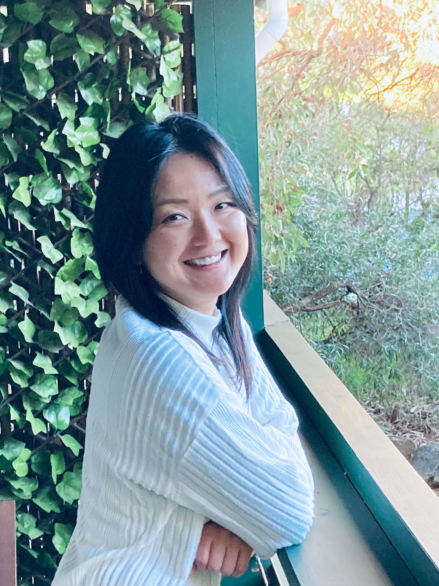

About

Hi, I’m Ami Fukuyama. I’m an aspiring programmer originally from
Himeji, Japan, and I’ve been living in Australia for 12 years.
After a rewarding career in beauty therapy and management, I
discovered a passion for technology and problem-solving. I’ve been
studying programming through SheCodes online and building projects
to strengthen my skills.
My current focus is front-end
development, and I’m passionate about expanding into back-end to
become a full-stack developer. I’m excited to keep learning,
contribute to projects, and grow into a developer role.